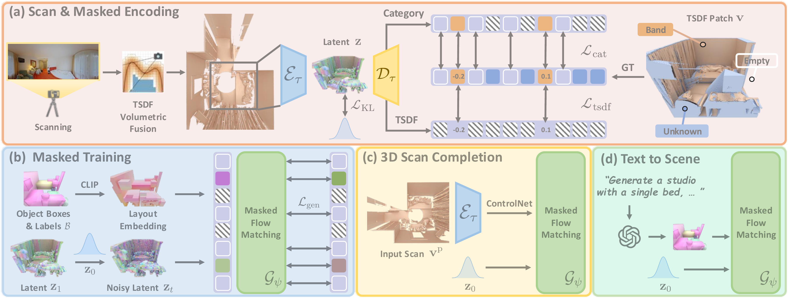

Seen2Scene takes an incomplete real-world 3D scan and generates a complete, coherent 3D scene using visibility-guided flow matching — trained directly on real-world data.
We present Seen2Scene, the first flow matching–based approach that trains directly on incomplete, real-world 3D scans for scene completion and generation. Unlike prior methods that rely on complete and hence synthetic 3D data, our approach introduces visibility-guided flow matching, which explicitly masks out unknown regions in real scans, enabling effective learning from real-world, partial observations. We represent 3D scenes using truncated signed distance fields (TSDFs) encoded in sparse grids and employ a sparse transformer to efficiently model complex scene structures while masking unknown regions. We employ 3D layout boxes as an input conditioning signal, and our approach is flexibly adapted to various other inputs such as text or partial scans. By learning directly from real-world, incomplete 3D scans, Seen2Scene enables realistic 3D scene completion for complex, cluttered real environments. Experiments demonstrate that our model produces coherent, complete, and realistic 3D scenes, outperforming baselines in completion accuracy and generation quality.
Visibility-guided flow matching on sparse TSDF representations.

Overview of Seen2Scene. We introduce visibility-guided flow matching for modeling the distribution of TSDF partial scans. (a) Partial scan TSDF patches v are encoded by a masked sparse VAE (ℰτ, 𝒟τ) into latent representations z, masking out unknown regions unseen by the camera. (b) A sparse transformer 𝒢ψ conditioned on 3D layout boxes ℬ is trained with masked flow matching on surface and empty region tokens. (c) We fine-tune 𝒢ψ for scan completion by injecting partial scan inputs vp via ControlNet. (d) 𝒢ψ can also be flexibly adapted for text or layout-conditioned 3D scene generation from scratch.
Qualitative comparison. Seen2Scene vs SG-NN and NKSR on ScanNet++ and ARKitScenes.
Side-by-side comparison with ground truth across multiple scenes.
Layout-conditioned 3D scene generation from semantic bounding boxes.
Natural language prompts translated to 3D layouts via LLM, then generated by Seen2Scene.
@misc{meng2026seen2scene,
title = {Seen2Scene: Completing Realistic 3D Scenes
with Visibility-Guided Flow},
author = {Quan Meng and Yujin Chen and Lei Li
and Matthias Nie{\ss}ner and Angela Dai},
year = {2026},
eprint = {2603.28548},
archivePrefix = {arXiv},
primaryClass = {cs.CV},
url = {https://arxiv.org/abs/2603.28548}
}